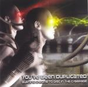

| Artist: | Various Artists |
| Title: | You'Ve Been Duplicated - Burning Chrome To Disc In The Cyberage |
| Label: | Aktivator Records AKTIVATOR 8 |
| Length(s): | 79 minutes |
| Year(s) of release: | 2005 |
| Month of review: | [11/2005] |
| 1) | Dark Sun - Heart Beat | 7.42 |
| 2) | Sun Zoom Spark - March Of The Chrome Police | 5.16 |
| 3) | ST 37 - Chromosome Damage | 7.03 |
| 4) | The Moor - Armageddon | 9.14 |
| 5) | Drunken Gunmen - Zombie Warfare | 5.36 |
| 6) | Subzone - Ghost Town | 5.06 |
| 7) | Scattered Planets - New Age | 3.11 |
| 8) | Jet Jaguar - The Need | 2.58 |
| 9) | Sub-Primitive - Half Machine Lip Moves | 4.14 |
| 10 Sow Belly - Static Gravity | 5.03 | |
| 11) | The JFK Jr. Royal Airforce - Slip It To The Android | 6.01 |
| 12) | Orgone - Jonestown | 2.13 |
| 13) | Rectoplasm - It Wasn't Real | 5.27 |
| 14) | Malombra - Off The Line/Danger Zone | 4.46 |
| 15) | Cash Slave Clique - Magnetic Dwarf Reptile | 4.42 |
Opener Dark Sun turn Heart Beat into a Hawkwind style space bit, with only the slightest hint of its wave origin. Not my first association with Chrome, but not a bad result at all, considering it moves close to Hawkwind's better material. On the one hand taking time to spin the melody, but refraining from trips into neverland.
Even though Sun Zoom Spark continue on the spacefeel of its predecessor initially, soon it changes into a wavy affair, thus bringing the sound you would expect from Chrome. Having said that: as the track progresses we do return to more spacey sounds.
Chromosome Damage is pretty much space rock (the rock added compared to the previous tracks). The Hawkwind feel remains though, this referring to such tracks as Silver Machine. This rock feel flakes off as we progress, moving more and more into a very spacy duel between rhythm and lead guitar.
The Moor includes some spacey sounds in background guitar and keys, but the riffy guitar and grave vocals with a vibration are most prominent in this rendition. Towards the end we move into a section that has a more progressive feel, somewhat fitting within the harder Swedish style.
Drunken Gunmen plunge us into Silver Machine once again, but the Hendryx experimental guitar and odd other sounds later on take us on a different path that leads closer to for instance DJ Spooky.
Subzone combines spacey keys with spoken vocals. Due to the key sound a rather eerie effect is created.
Scattered Planets feature some rather noisy guitars, reminiscent of Pixies. The vagueish vocals may diminish the effect a bit, but the association remains.
Jet Jaguar move in the direction of anarcho punk, such as made by Ministry or Sigue Sigue Sputnik. Sub-Primitive take a lot of fuzz guitar with distant vocals laid across.
Static Gravity has an eerie feel with some progressive tinges (due to the synth use), but with its root in Sisters of Mercy like wave.
Slip It To The Android is based on some guitar feedback loops, only slowly developing its melody, played dissonantly on guitar. Then abrupbtly we move into a new section with drums and disconnected vocalisation.
Orgone is led by emotional vocals (reminding of Greg Sage) with weird -arcane sounding- keyboard sounds that remind of some of the French experimentalists, Air most of all.
Rectoplasm is surprisingly industrial in both guitar and rhythm. The vocals sound computerized.
Malombra create a style that is heavily progressive, especially in guitar, but keys as well. As the track progresses the guitars become more aggresive, more into a wave type sound. The vocals are no longer orated, without being sung directly.
Closer Magnetic Dwarf Reptile starts with three minutes worth of pure experiment (mostly electronic with guitar), to move into a more melodic, but still experimental enough section.
Having said that: all bands give an interesting and rather original view on the compositions, resulting in an album that sounds good, easily good enough to stand up as a whole that I enjoyed far more than I seem to remember enjoying the original.